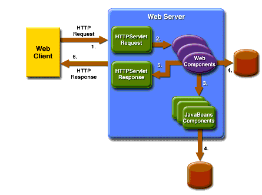
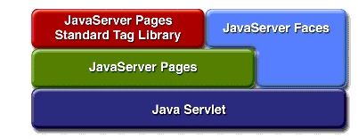

Getting Started with Web Applications
A web application is a dynamic extension of a web or application server. There are two types of web applications:
In the Java 2 platform, web components provide the dynamic extension capabilities for a web server. Web components are either Java servlets, JSP pages, or web service endpoints. The interaction between a web client and a web application is illustrated in Figure 3-1. The client sends an HTTP request to the web server. A web server that implements Java Servlet and JavaServer Pages technology converts the request into an
HTTPServletRequestobject. This object is delivered to a web component, which can interact with JavaBeans components or a database to generate dynamic content. The web component can then generate anHTTPServletResponseor it can pass the request to another web component. Eventually a web component generates aHTTPServletResponseobject. The web server converts this object to an HTTP response and returns it to the client.

Figure 3-1 Java Web Application Request Handling
Servlets are Java programming language classes that dynamically process requests and construct responses. JSP pages are text-based documents that execute as servlets but allow a more natural approach to creating static content. Although servlets and JSP pages can be used interchangeably, each has its own strengths. Servlets are best suited for service-oriented applications (web service endpoints are implemented as servlets) and the control functions of a presentation-oriented application, such as dispatching requests and handling nontextual data. JSP pages are more appropriate for generating text-based markup such as HTML, Scalable Vector Graphics (SVG), Wireless Markup Language (WML), and XML.
Since the introduction of Java Servlet and JSP technology, additional Java technologies and frameworks for building interactive web applications have been developed. These technologies and their relationships are illustrated in Figure 3-2.

Figure 3-2 Java Web Application Technologies
Notice that Java Servlet technology is the foundation of all the web application technologies, so you should familiarize yourself with the material in Chapter 11 even if you do not intend to write servlets. Each technology adds a level of abstraction that makes web application prototyping and development faster and the web applications themselves more maintainable, scalable, and robust.
Web components are supported by the services of a runtime platform called a web container. A web container provides services such as request dispatching, security, concurrency, and life-cycle management. It also gives web components access to APIs such as naming, transactions, and email.
Certain aspects of web application behavior can be configured when the application is installed, or deployed, to the web container. The configuration information is maintained in a text file in XML format called a web application deployment descriptor (DD). A DD must conform to the schema described in the Java Servlet Specification.
Most web applications use the HTTP protocol, and support for HTTP is a major aspect of web components. For a brief summary of HTTP protocol features see Appendix C.
This chapter gives a brief overview of the activities involved in developing web applications. First we summarize the web application life cycle. Then we describe how to package and deploy very simple web applications on the Application Server. We move on to configuring web applications and discuss how to specify the most commonly used configuration parameters. We then introduce an example--Duke's Bookstore--that we use to illustrate all the J2EE web-tier technologies and we describe how to set up the shared components of this example. Finally we discuss how to access databases from web applications and set up the database resources needed to run Duke's Bookstore.
All of the material in The J2EE(TM) 1.4 Tutorial is copyright-protected and may not be published in other works without express written permission from Sun Microsystems.